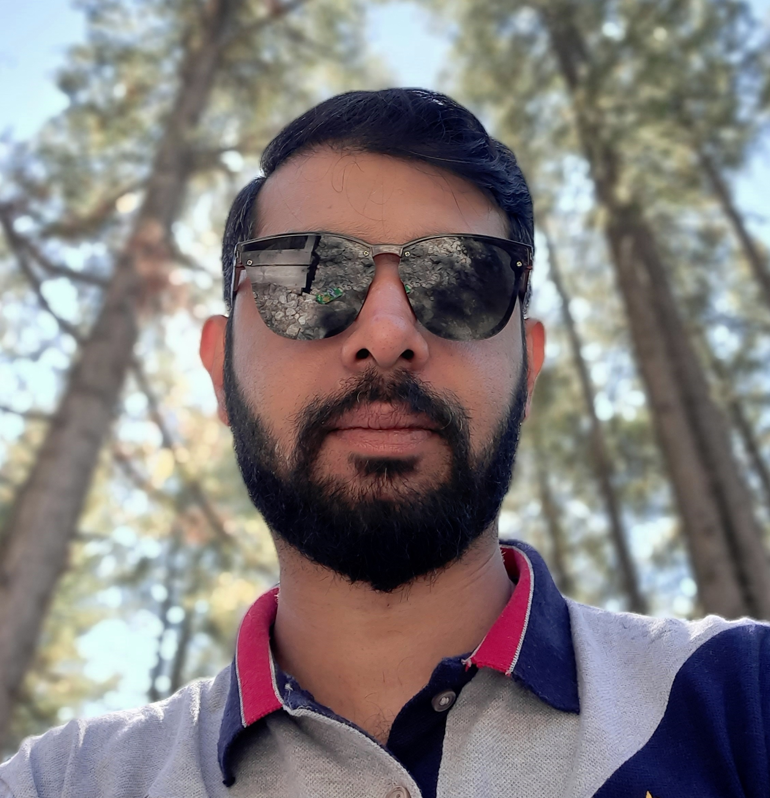

SHIZWAN SHAUKAT

OBJECTIVE
To secure a responsible career opportunity, where I can fully utilize my educational background, experience, team leading skills and management skills, While making a significant contribution to the success of my employer.
EXPERIENCE (Sep 2011 - till date)
Elmetec Private Limited, Lahore - (Mar 2013 - till date)
Elmetec (Electrical & Mechanical Technologies) Pvt. Ltd. manufactures 11KV distribution transformers from 10KVA to 630KVA as per WAPDA specifications and all other capacities up to 5000KVA. In addition to that, it also manufactures medium & low voltage switchgears and Instrument transformers.
Quality Manager - (Mar-2017 - till date)
- Distribution transformers design.
- Material inspection & their testing.
- To review and approve inspections, test plans and quality control plans.
- To implement quality control procedures and plans.
- Quality control and assurance.
- To implement ISO/IEC 17025:2017 standard in testing laboratory.
- To ensure that the organization’s Quality Management System conforms to customer, internal, ISO-9001:2015 and legal requirements.
- Identification of defects and their removal to establish a good quality management system.
- To conduct periodic management review meetings.
- Final inspection of products before dispatching.
Quality Control Engineer - (Jan 2014 - Feb 2017)
- Stage inspection during manufacturing process.
- To implement quality control procedures and plans.
- To perform incoming materials’ tests & inspection according to ISO standards.
- To inspect and testing of distribution & instrument transformers.
- To review and approve inspections, test plans and quality control plans.
- Final visual inspection before dispatching.
- To maintain daily dispatching reports record.
- Installation & Commissioning at site on customers’ demand.
- After sales services (on & off site).
Production Engineer - (Mar 2013 - Dec 2013)
- To manage 10KVA to 5000KVA Distribution Transformers’ (Pole mounted & Pad mounted) manufacturing process as per WAPDA specifications.
- To manage production of switchgears as per work orders.
- Evaluation of production targets and achieving them within the time limit.
- To motivate 300+ workers towards achieving the defined goals of better productivity in time.
- Transformers’ & switchgears’ material management.
- To manage LV Panels and Main Distribution Boards manufacturing process.
- Allocation of tasks to electrical supervisor and technicians.
- To review the fabrication drawings and wiring diagrams before releasing them for production.
- To review the B.O.Q and verification according to specifications.
- To perform final internal routine testing before releasing for dispatch.
- Daily production sheet record maintenance
- Electrification and maintenance in LACAS school system Lahore.
Electro steel, Lahore - (Sep 2011 - Mar 2013)
Electro steel is a contracting company which deals in Private transformers, Tanks & Distribution Boards.
Engineer Marketing
- Transformer & Distribution boards sales & marketing.
- After sales services.
- To maintain professional working contact with key suppliers and third parties.
- Record maintenance.
ACADEMIC QUALIFICATION
- M.Sc. Electrical Engineering (2021-2023) from University of Central Punjab, Lahore, Pakistan.
- B.Sc. Electrical Engineering (2007-2011) from University of Central Punjab, Lahore, Pakistan.
- F.Sc. Pre-Engineering (2005-2007) from District Public School & College Okara, Pakistan.
- Matriculation (2003-2005) from District Public School & College Okara, Pakistan.
PROJECTS
- Temperature rise using Regression technique on MATLAB.
- Solar power projects 10kw to 120kw.
- Offline Signature Verification (With Different Signatures Database).
- Local Area Wi-Fi system using Rocket M2
- Entrance security software.
- Traffic control system for emergency vehicles.
- Airplane pitch control.
- Online resume using html.
- Creation of a simple calculator in Android using Java
TRAININGS
- Solar and Wind power potential in Pakistan (May 2023) from Pakistan Engineering Council, HQ Islamabad, Pakistan.
- Artificial Intelligence: Implications for technologies & Business Strategy (April 2023) from Pakistan Engineering Council, HQ Islamabad, Pakistan.
- Cellular Networks - 2G to 5G technology and Future applications (April 2023) from Pakistan Engineering Council, HQ Islamabad, Pakistan.
- Advanced numerical techniques (Nov 2022) from Pakistan Engineering Council, HQ Islamabad, Pakistan.
- Construction, safety & Challenges (Nov 2022) from Pakistan Engineering Council, HQ Islamabad, Pakistan.
- Development of Technical team & Execution of projects (Mar 2021) from Pakistan Engineering Council, HQ Islamabad, Pakistan.
- Calculation of Measurement of Uncertainty (Jan 2021) from Al Meezan Industrial Metrology Services, Lahore, Pakistan.
- Internal Auditing (Jan 2021) from Al Meezan Industrial Metrology Services, Lahore, Pakistan.
- ISO/IEC 17025:2017 (Jan 2021) from Al Meezan Industrial Metrology Services, Lahore, Pakistan.
- ISO/IEC 17025:2017 (Feb 2020) from PCSIR Laboratories Complex, Lahore, Pakistan.
- ISO/IEC 17025:2005 (Sep 2017) from PCSIR Laboratories Complex, Lahore, Pakistan.
- Internal Auditing (May 2016) from PCSIR Laboratories Complex, Lahore, Pakistan.
- Measurement Uncertainty (May 2016) from PCSIR Laboratories Complex, Lahore, Pakistan.
- GSM-BSS (Dec 2010) from ZTE Pakistan (Pvt.) Ltd.
ACHIEVEMENTS & CERTIFICATIONS
- Gold Medal (Jan 2024)
My dedication and excellence in the field of electrical engineering were exemplified by the prestigious recognition of the Gold Medal in M.Sc Electrical Engineering. I got 1st position in M.Sc. Electrical Engineering. This was the result of remarkable accomplishment and outstanding academic performance with 3.93 CGPA and unparalleled passion for advancing the frontiers of electrical engineering.
- Certification of Volunteer in Service Learning Program (Aug 2009)
I have put my efforts voluntarily in the department of psychiatry, Services Institute of Medical Sciences Lahore, Pakistan for the period of 3 months.
TECHNICAL SKILLS
- Solar Power plant design, Installation, troubleshooting.
- Transformer design, testing, commissioning & troubleshooting.
- C++ programming.
- Object Oriented programming.
- Web Development.
- MS Office.
- MATLAB.
- Operating system troubleshooting.
LANGUAGES